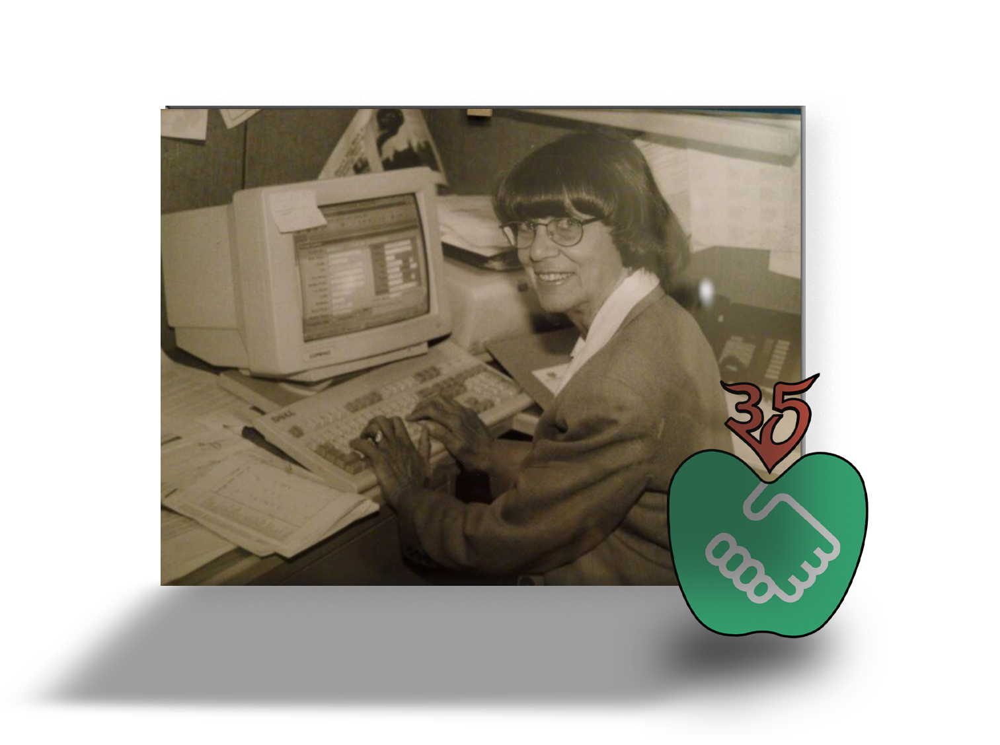

Our Mission
Big Apple Greeter’s mission is to enhance New York City’s worldwide image and enrich the New York experience by connecting visitors with knowledgeable and enthusiastic volunteers. We work toward a friendlier New York, showing the world the city we actually live in: welcoming, generous, and glad you came. A stronger New York, bolstering tourism and supporting the city’s economic development, one good visit at a time. And a prouder New York, giving New Yorkers a way to volunteer that starts with the thing they already do best: loving where they live, out loud.
The Story
- 1992
Lynn Brooks founds Big Apple Greeter, the world’s first free welcome-visitor program. No tickets, no scripts, no tips. Just a New Yorker and a visitor, walking.
- The idea
Lynn kept meeting people who wanted to see New York but felt intimidated by its size. Her answer: stop selling the skyline and start sharing the neighborhoods. The city gets small when a local shows you their block.
- The movement
The idea traveled. Volunteers in Australia, Argentina, Canada, and across the U.S. started programs of their own, and in 2005 the growing network held its founding roundtable right here in New York.
- Today
Our volunteers welcome about 5,000 visitors a year, across more than 100 neighborhoods, in more than 20 languages. Guests have come from all 50 states and over 100 countries. We’re a proud partner of NYC Tourism + Conventions.


Board Leadership
As of January 2025- Patty ClarkCo-Chair
CEO, Project Gestalt, Inc.
- Patrick W. CondrenCo-Chair
President, Patcon Associates, Ltd.
- Dan MorrisonCo-Chair
Greeter Representative, Big Apple Greeter.
- Alicia PierroExecutive Director
Executive Director, Big Apple Greeter.
Directors
- Howard Becker
Vice President Membership, The Business Council of New York State, Inc.
- Kamal Bhatia, CFA
President and CEO of Principal Funds, Principal Global.
- Garrett R. Bowden
Managing Director, Chesterfield Faring, Ltd.
- Christopher P. Boylan
Immediate Past Co-Chair. Director, Governmental & Strategic Partnerships, General Contractors Association.
- Bennett Brooks
Senior Mediator, Consensus Building Institute, Inc.
- Kelly Ann Curtin
Executive Vice President, Membership, NYC Tourism + Conventions.
- Vijay Dandapani
President & CEO, Hotel Association of New York City, Inc.
- Merrie L. Davis
Producer & CEO, Next Act 2 Follow, LLC.
- Albert FernandezTreasurer
CFO/Controller, Hotel Association of New York City, Inc.
- Rebecca Howard-Cooper
Communications Strategist.
- Avik Kabessa
CEO, Carmel Car & Limousine Service.
- Peter Kohlmann
Founder, PeKo Creative.
- Phil Phillips
Greeter Representative, Big Apple Greeter.
- David Rothfeld, Esq.
Partner, Ellenoff, Grossman & Schole, LLP.
- John J. Ruzich, OBE
President & CEO, The TIMM Group, LLC.
- Markly Wilson
Director, International Marketing, New York State Division of Tourism.
- Peter Wright
Greeter Representative, Big Apple Greeter.
- Honorary lifetime members
Including founding board member Douglas Durst and former chairs from MasterCard, AIG, and Con Edison.
- Ex-officio
The Mayor of New York City and the borough presidents.
The International Greeter Association
internationalgreeter.org →- What it is
A worldwide association of free greeter programs: more than 150 member programs in 40 countries on six continents, formally incorporated in 2019 after years as the informal Global Greeter Network.
- Where it started
Right here. The greeter idea began with Big Apple Greeter in 1992, and when the growing movement held its founding roundtable in 2005, New York was the host.
- What every member promises
Greets are always free. Volunteers offer real local hospitality. Every visitor and volunteer is welcome, without discrimination. Greeters promote tourism that’s sustainable for their cities, and person-to-person connections that make a better world.
- Why it matters
One New Yorker’s idea now welcomes visitors on six continents. When you’re greeted anywhere from Paris to Buenos Aires, you’re meeting Lynn’s idea, translated.